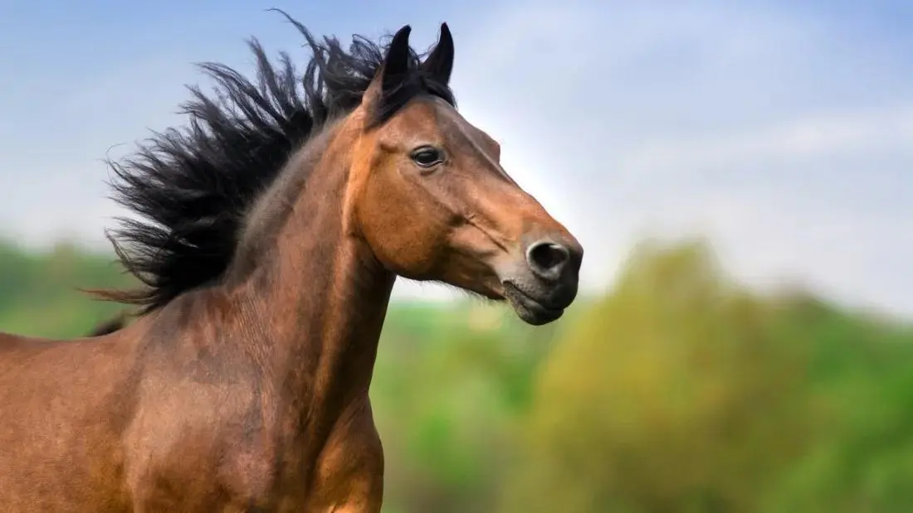
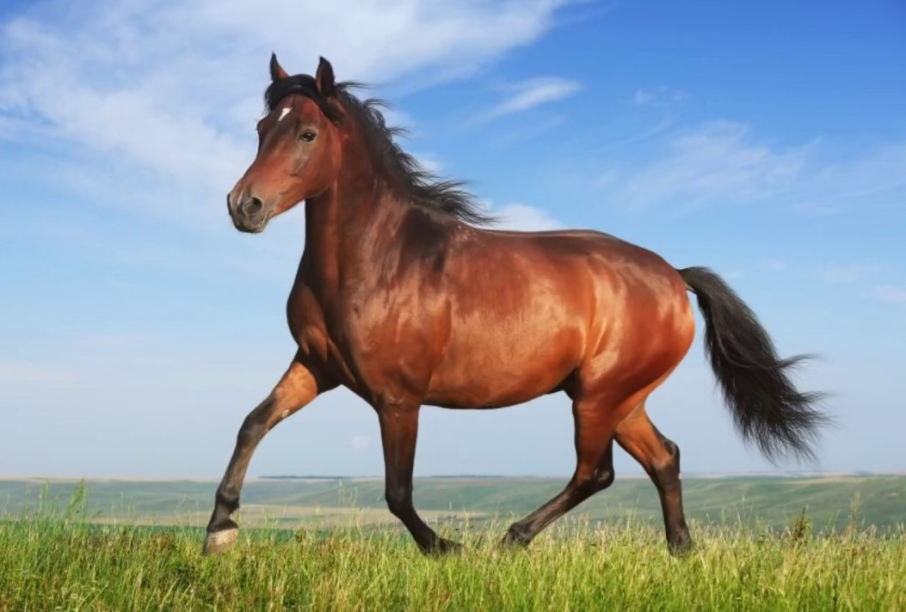
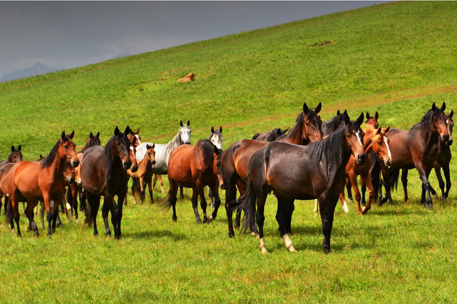

Sevimli hayvonim o'tlar

1-расм 🐎
«От — эркинликнинг энг гўзал тимсоли.»


2-расм 🐎
«Баъзи гўзалликларни сўз билан эмас, қалб билан хис киласаню

3-расм 🐎🤎
«Ҳар бир отнинг ўз гўзаллиги, ўз характери ва ўз ҳикояси бор.